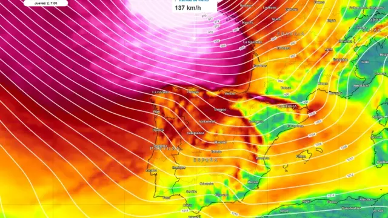
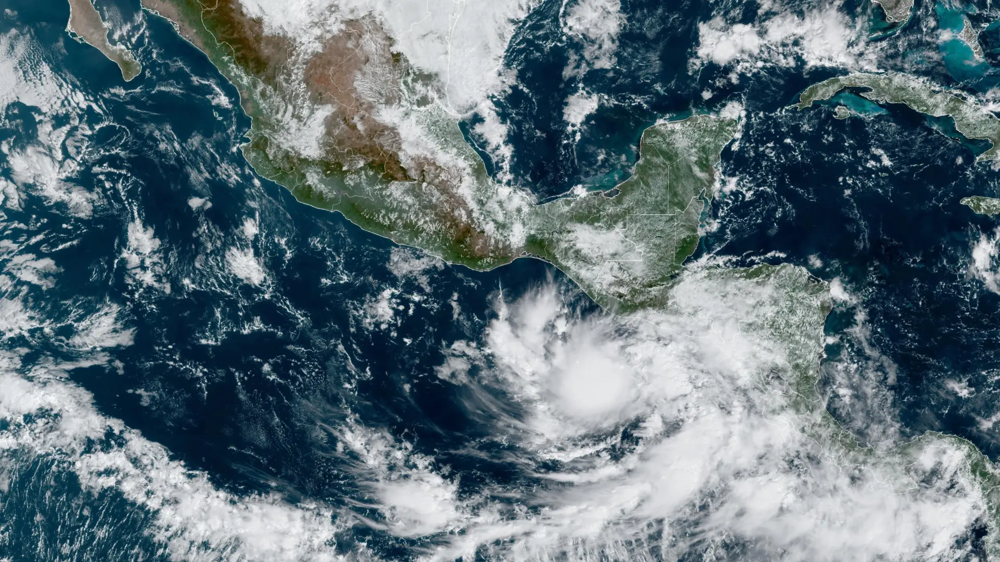

Así será la borrasca Ciarán, la gigantesca ciclogénesis explosiva que afectará "desde Islandia
hasta el Estrecho" - 31/10/2023 - Madrid

Imagen térmica de satélite en la que se aprecia el avance de la borrasca 'Ciaran'
La semana del puente de Todos los Santos dejará un tiempo otoñal en España por la llegada de
Ciarán.
Se trata de una profunda borrasca bautizada por el servicio meteorológico británico, el Met Office.
A partir del miércoles, su frente asociado dará lugar a vientos muy fuertes y lluvias en
prácticamente la totalidad de la Península y Baleares.
La borrasca Ciarán, que se ha originado en aguas del Atlántico Norte, "afectará principalmente al
Reino Unido, aproximándose a las islas desde el suroeste a últimas horas del miércoles", cuentan
fuentes de Eltiempo.es a 20minutos. Los efectos se empezarán a notar en España "la tarde del Día de
Todos los Santos, cuando un frente asociado a la borrasca se acerque al noroeste".
Prisión para ocho detenidos en Galicia y Madrid en una operación contra el narcotráfico -
31/10/2023 - A Coruña
Agentes de la Guardia Civil consultan sus dispositivos
La Guardia Civil ha detenido a ocho personas en A Coruña, Pontevedra y Madrid en una
operación contra
el narcotráfico con ramificaciones en Inglaterra y Suiza en la que decomisó hachís,
MDMA y cocaína y
todos ellos están en prisión provisional.
La operación se ha desarrollado durante este mes de octubre y empezó cuando la Guardia Civil detuvo
en Madrid a un hombre que transportaba en una cabeza tractora de un camión 148 kilos de
hachís y dos
kilos de MDMA, con destino a Murcia para su envío a Inglaterra.
Local
Madrid pide al Gobierno que sus ayudas a la vivienda queden libres de tributar en el IRPF -
31/10/2023 - Madrid
Vivienda en miniatura en las manos de una persona
Un ciudadano que pida una ayuda al Gobierno de España para retirar el amianto del tejado de su
vivienda no debe declararla en el IRPF. En cambio, si el mismo la solicita al Ayuntamiento de
Madrid, debe saber que dicha subvención se integra como una ganancia patrimonial, por lo que tendrá
que responder fiscalmente ante ella al hacer la declaración de la renta. Incluso, dependiendo de la
cuantía, el subsidio podría llegar a ocasionar la pérdida el copago de medicamentos, de
becas de
comedor o de estudios de los hijos.
El PP de la capital elevará esta situación "discriminatoria" al Pleno de Cibeles de
este lunes para
pedir al Ejecutivo de Pedro Sánchez un cambio en la legislación que permita declarar exentas
fiscalmente todas las subvenciones recibidas del Ayuntamiento para la realización de obras de
rehabilitación en vivienda habitual en actuaciones de accesibilidad, conservación, eficiencia
energética y salubridad de edificios residenciales. Dicha proposición saldrá adelante gracias a la
mayoría absoluta de 29 concejales de la que gozan los populares en la ciudad. También votará a favor
Más Madrid y, previsiblemente, Vox, mientras que el PSOE se abstendrá.
El aparatoso incendio de un coche en la M-30 en Madrid provoca fuertes retenciones en ambas
direcciones -
31/10/2023 - Madrid
Vehículo incendiado en la M-30
Un turismo ha comenzado a arder este martes en torno a las 8:30 horas en el
kilómetro 5 de la M-30 en
Madrid, en dirección Alcalá de Henares. Según han comunicado fuentes del 112 Madrid a 20minutos, los
bomberos han acudido a apagar las llamas y una ambulancia del SAMUR se dirigió al lugar para calmar
una crisis de ansiedad. El accidente ha provocado gigantescas retenciones en la carretera.
Los servicios recibieron la alerta de una columna de humo negro procedente del
vehículo, y enviaron
una unidad de bomberos para mitigar el posible incendio. Posteriormente, según se ha podido
comprobar por vídeos en redes sociales, el coche comenzó a arder.
Internacional
Al menos dos muertos por la tormenta tropical 'Pilar' en El Salvador -
31/10/2023 - San Salvador

Imagen de satélite de la tormenta sobre El Salvador
Al menos dos personas han fallecido por las crecidas de los ríos en el marco de la
tormenta tropical
'Pilar', en el Salvador, que se encuentra en alerta roja por la situación meteorológica.
La Dirección General de Protección Civil ha señalado que las víctimas mortales son un hombre
de 24
años y una mujer de 57. Ambos cuerpos los han encontrado en la región de la Unión.
Además, las
autoridades están buscando a un joven de 18 años, que también ha sido arrastrado por la corriente.
Predicciones de la actividad tropical en la temporada de 2023
Fuente
Fecha
Tormentas nombradas
Huracanes
Huracán mayor
TSR
6 de diciembre de 2022
13
6
3
TSR
6 de abril de 2023
12
6
2
UA
7 de abril de 2023
19
9
5
CSU
13 de abril de 2023
13
6
2
TWC
13 de abril de 2023
15
7
3
NCSU
13 de abril de 2023
11-15
6-8
2-3
SMN
4 de mayo de 2023
10-16
3-7
2-4
NOAA
25 de mayo de 2023
12-17
5-9
1-4
UKMO*
26 de mayo de 2023
20
11
5
TSR
31 de mayo de 2023
13
6
2
CSU
1 de junio de 2023
15
7
3
UA
16 de junio de 2023
25
12
6
TWC
17 de junio de 2023
17
9
4
CSU
6 de julio de 2023
18
9
4
TSR
7 de julio de 2023
17
8
3
TWC
19 de julio de 2023
20
10
5
UKMO
1 de agosto de 2023
19
9
6
CSU
3 de agosto de 2023
18
9
4
TSR
8 de agosto de 2023
18
8
3
NOAA
10 de agosto de 2023
14-21
6-11
2-5
El apartamento de Zelenski en Crimea, subastado por casi medio millón de dólares -
31/10/2023 - Moscú
Imagen aérea del apartamento de Volodímir Zelenski
El apartamento que poseían en el balneario crimeo de Yalta el presidente ucraniano, Volodímir
Zelenski, y su esposa, Olena Zelenska, fue subastado este lunes por 44,3 millones de rublos (475.400
dólares).
De acuerdo con la agencia oficial rusa TASS, el inmueble, confiscado en mayo pasado por el
Parlamento impuesto por Rusia en la anexionada península de Crimea, fue subastado en estado de
preacabado, ya que la pareja presidencial nunca vivió en esa propiedad y solo las paredes estaban
encaladas.